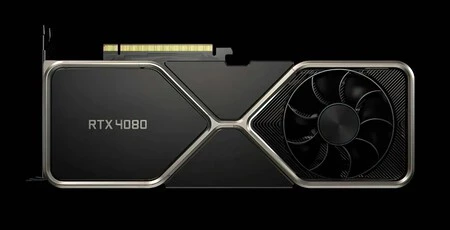

Autor:Diego Ameth Hernandez Hernandez
> ¿Qué hay dentro y cómo funciona una tarjeta gráfica?
La tarjeta gráfica tiene la función principal de transformar los datos que envía el procesador. El
resultado es una información visible y comprensible que puede apreciar el usuario.
La tarjeta de video cuenta con componentes diseñados para procesar imágenes de video. Por ello, esta
tarjeta destaca por poseer su propia memoria RAM y sistema de ventilación.
Aquí te detallamos los componentes de una tarjeta gráfica:
- GPU: Es la Unidad de Procesamiento Gráfico. Este circuito se encarga de procesar los gráficos, aligerando la carga del trabajo del procesador central.
- GRAM: Esta memoria gráfica de acceso aleatorio (GRAM) es clave para almacenar y transportar información entre sí. Existen dos tipos de memorias gráficas: las dedicadas y compartidas.
- RAMDAC: Este conversor de señal digital a señal analógica, transforma las señales digitales en el ordenador para que puedan ser interpretadas por el monitor.
- Dispositivos refrigerantes: Su función es eliminar el calor excesivo de la tarjeta gráfica. Se utilizan dos tipos en las tarjetas: disipadores o ventiladores.
- Salidas: Hay diferentes tipos de salidas que se pueden usar como las VGA, DVI, HDMI, DisplayPort o USB-C.
